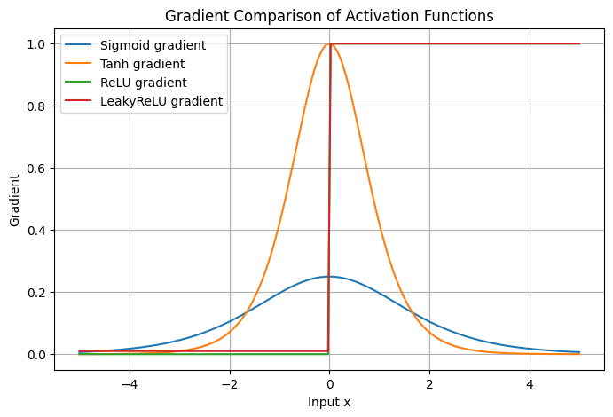
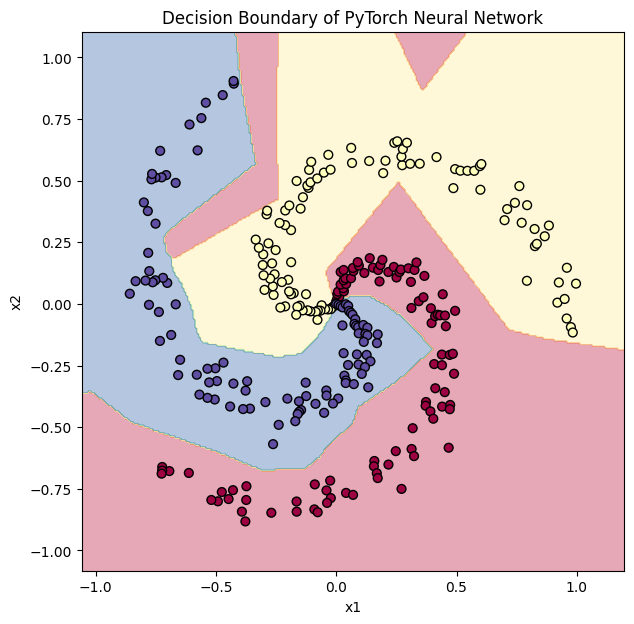

CH 01퍼셉트론 — 가중합과 논리 게이트#
퍼셉트론 한 개는 입력에 가중치를 곱해 모두 더하고(가중합), 편향을 더한 뒤 기준을 넘으면 1, 못 넘으면 0을 낸다. 코드로 보면 조건문 한 줄 없이 np.sum(x * w) + b가 0보다 큰지 비교하는 것이 전부다. numpy로 AND·NAND·OR 게이트를 직접 가중치를 손으로 정해 구현했다.
학습
AND(0,0)=0 AND(1,0)=0 AND(0,1)=0 AND(1,1)=1 # w=[0.5,0.5], b=-0.7 NAND 1 1 1 0 # w=[-0.2,-0.2], b=0.3 OR 0 1 1 1 # w=[0.7,0.7], b=-0.4
관찰
편향을 무작위(정규분포)로 뽑아 4개 입력을 모두 맞히는 w1, w2, b를 탐색해 봐도 AND는 w1≈1.16, w2≈0.95, b≈-1.21처럼 손으로 정한 값과 부호·크기 경향이 같았다. 정답을 가르는 직선 하나만 그으면 되는 문제라 해가 무수히 많다는 뜻이다.
CH 02XOR — 단층이 못 푸는 벽#
의문
시행
단층은 선형 분리(직선 하나)만 가능하다. XOR의 네 점 (0,0)→0, (1,1)→0, (1,0)→1, (0,1)→1을 평면에 찍으면 어떤 직선을 그어도 0과 1을 한 번에 갈라낼 수 없다. 대신 이미 만든 게이트를 층으로 쌓았다. NAND와 OR의 출력을 다시 AND에 통과시키는 2층 구조다.
[0,0] NAND→1 OR→0 AND(1,0)→0 [1,0] NAND→1 OR→1 AND(1,1)→1
결론(중간)
한 층을 더 쌓으니 직선 하나로 못 가르던 문제가 풀렸다. 1층(NAND·OR)이 1차 기준을 만들고, 2층(AND)이 그 결과를 다시 조합한 것이다.
CH 03활성화함수 네 가지와 기울기#
활성화함수가 없으면 nn.Linear를 아무리 쌓아도 결국 하나의 큰 선형식과 같아진다. 비선형성을 끼워야 곡선 경계를 학습한다. -5부터 5까지 입력에 Sigmoid·Tanh·ReLU·LeakyReLU를 적용하고, PyTorch 자동미분으로 각 함수의 기울기를 직접 구해 비교했다.
테스트
- Sigmoid: 출력을 0~1로 압축.
- Tanh: -1~1로 압축, 출력 중심이 0에 가까움.
- ReLU: 음수는 0, 양수는 그대로 통과. 양수 구간 기울기 1.
- LeakyReLU: 음수 입력에
negative_slope=0.01을 곱해 작게 흘려보냄.

CH 04기울기 소실 — 학습 속도가 갈리는 이유#
시행
입력 2 → 은닉 16 → 은닉 16 → 출력 1 구조를 고정하고, 활성화함수만 네 가지로 바꿔 two-moons(반달 모양 이진분류)를 같은 조건(Adam, lr=0.01, 200 epoch)으로 학습했다. 구조가 같으니 차이는 오직 활성화함수에서 온다.
관찰
Tanh loss 0.0332 acc 1.000 ReLU loss 0.0249 acc 1.000 LeakyReLU loss 0.0248 acc 1.000 Sigmoid loss 0.2730 acc 0.935
Sigmoid만 손실이 한 자릿수 높은 곳에 멈췄고 정확도도 0.935에 그쳤다. Sigmoid의 미분 최대값은 0.25라, 층을 거칠수록 기울기가 0.25씩 곱해지며 작아진다 — 역전파에서 앞쪽 층으로 신호가 거의 안 가는 기울기 소실이다. 반면 ReLU 계열은 양수 구간 기울기가 1이라 신호가 그대로 전달돼 더 빨리, 더 낮은 손실로 수렴했다.
CH 05spiral 3-class — MLP의 비선형 경계#
시행
극좌표로 클래스마다 다른 각도 범위를 돌려 나선 3개(각 100개, 총 300개)를 만들었다. 클래스가 서로 말려 들어가 직선으로는 못 가른다. 입력 2 → 20 → 10 → 5 → 5 → 출력 3, 사이마다 ReLU를 넣은 MLP를 CrossEntropyLoss·Adam(lr=0.001)으로 10000 epoch 학습했다. 출력층에는 Softmax를 직접 붙이지 않는다 — CrossEntropyLoss가 내부에서 처리한다.
관찰
Epoch [ 0/10000] Loss 1.152041 Acc 0.3333 Epoch [ 500/10000] Loss 0.375452 Acc 0.9367 Epoch [ 2000/10000] Loss 0.052234 Acc 0.9933 Epoch [10000/10000] Loss 0.011385 Acc 0.9933

결론(중간)
시작 정확도 0.3333은 3클래스를 그냥 찍은 수준(1/3)이다. 학습이 진행되며 결정경계가 나선을 따라 휘어졌고 정확도 0.9933에 도달했다. CH2의 XOR에서 본 "층을 쌓아 1차 조건을 조합한다"는 원리가, 그대로 곡선 경계 학습으로 확장된 결과다.
📚 근거 출처
- 실습 코드 —
from_colab_deep_learning/0609-s(activation_functions · NN_Spiral_Multiclass · numpy_percept_logical_gate) - 강의 PDF — 딥러닝_신경망알고리즘_계층구조
- 공식 문서 — PyTorch 활성화함수